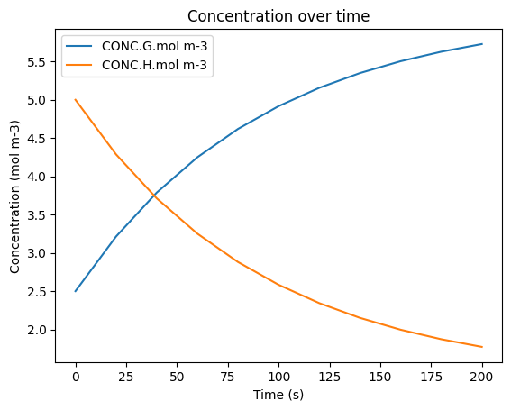

Overriding a Mechanism in MusicBox#
The MusicBox class only supports one mechanism at a time. If you desire to change the mechanism within the class, you will need to override it from scratch.
1. Creating the Mechanism and Box Model#
This is simply a copy of the first half of the Basic Workflow Tutorial to set up the mechanism for overriding.
[1]:
from acom_music_box import MusicBox, Conditions
import musica.mechanism_configuration as mc
import matplotlib.pyplot as plt
# Create each of the species that will be simulated
X = mc.Species(name="X")
Y = mc.Species(name="Y")
Z = mc.Species(name="Z")
species = {"X": X, "Y": Y, "Z": Z}
gas = mc.Phase(name="gas", species=list(species.values()))
# Create the reactions that the species undergo in the
arr1 = mc.Arrhenius(name="X->Y", A=4.0e-3, C=50, reactants=[species["X"]], products=[species["Y"]], gas_phase=gas)
arr2 = mc.Arrhenius(name="Y->Z", A=4.0e-3, C=50, reactants=[species["Y"]], products=[species["Z"]], gas_phase=gas)
rxns = {"X->Y": arr1, "Y->Z": arr2}
# Create the mechanism that is defined by the species, phases, and reactions
mechanism = mc.Mechanism(name="tutorial_mechanism", species=list(species.values()), phases=[gas], reactions=list(rxns.values()))
# Create the box model that contains the mechanism
box_model = MusicBox()
box_model.load_mechanism(mechanism)
2. Redefining Code#
For the sake of readability, the code from the previous cells will be redefined here to represent the new mechanism. Here, a new type of reaction is used, called a quantum tunneling reaction:
[2]:
# Create each of the species that will be simulated
G = mc.Species(name="G")
H = mc.Species(name="H")
species = {"G": G, "H": H}
gas = mc.Phase(name="gas", species=list(species.values()))
# Create the reactions that the species undergo in the
arr1 = mc.Tunneling(name="G->H", A=2.0e-3, B=2, C=50, reactants=[species["G"]], products=[species["H"]], gas_phase=gas)
arr2 = mc.Tunneling(name="H->G", A=9.0e-3, B=2, C=50, reactants=[species["H"]], products=[species["G"]], gas_phase=gas)
rxns = {"G->H": arr1, "H->G": arr2}
# Create the mechanism that is defined by the species, phases, and reactions
mechanism = mc.Mechanism(name="overriden_mechanism", species=list(species.values()), phases=[gas], reactions=list(rxns.values()))
# Create the box model that contains the mechanism
box_model = MusicBox()
box_model.load_mechanism(mechanism)
3. Running and Visualizing the new Box Model#
The rest of this code is an adapted version of the Basic Workflow code to run with the new mechanism. Refer to there for explanations about the code:
[3]:
# Set the conditions of the box model at time = 0 s
box_model.initial_conditions = Conditions(
temperature=298.15, # Units: Kelvin (K)
pressure=101325.0, # Units: Pascals (Pa)
species_concentrations={ # Units: mol/m^3
"G": 2.5,
"H": 5.0,
}
)
# Set the box model conditions at the defined time
box_model.add_evolving_condition(
100.0, # Units: Seconds (s)
Conditions(
temperature=310.0, # Units: Kelvin (K)
pressure=100100.0 # Units: Pascals (Pa)
)
)
# Set the additional configuration options for the box model
box_model.box_model_options.simulation_length = 200 # Units: Seconds (s)
box_model.box_model_options.chem_step_time = 1 # Units: Seconds (s)
box_model.box_model_options.output_step_time = 20 # Units: Seconds (s)
df = box_model.solve()
display(df)
df.plot(x='time.s', y=['CONC.G.mol m-3', 'CONC.H.mol m-3'], title='Concentration over time', ylabel='Concentration (mol m-3)', xlabel='Time (s)')
plt.show()
| time.s | ENV.temperature.K | ENV.pressure.Pa | ENV.air number density.mol m-3 | CONC.G.mol m-3 | CONC.H.mol m-3 | |
|---|---|---|---|---|---|---|
| 0 | 0.0 | 298.15 | 101325.0 | 40.874045 | 2.500000 | 5.000000 |
| 1 | 20.0 | 298.15 | 101325.0 | 40.874045 | 3.213819 | 4.286181 |
| 2 | 40.0 | 298.15 | 101325.0 | 40.874045 | 3.787516 | 3.712484 |
| 3 | 60.0 | 298.15 | 101325.0 | 40.874045 | 4.248595 | 3.251405 |
| 4 | 80.0 | 298.15 | 101325.0 | 40.874045 | 4.619165 | 2.880835 |
| 5 | 100.0 | 298.15 | 101325.0 | 40.874045 | 4.916991 | 2.583009 |
| 6 | 120.0 | 310.00 | 100100.0 | 38.836331 | 5.156409 | 2.343591 |
| 7 | 140.0 | 310.00 | 100100.0 | 38.836331 | 5.348819 | 2.151181 |
| 8 | 160.0 | 310.00 | 100100.0 | 38.836331 | 5.503449 | 1.996551 |
| 9 | 180.0 | 310.00 | 100100.0 | 38.836331 | 5.627719 | 1.872281 |
| 10 | 200.0 | 310.00 | 100100.0 | 38.836331 | 5.727589 | 1.772411 |
